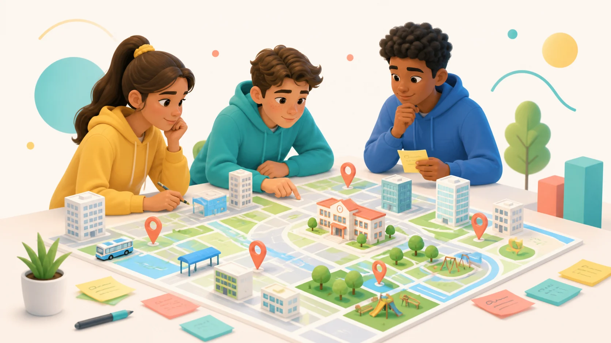

תוכנית דגל עירונית • כיתות ח׳ • חולון
Venture AI חולון
במצגת הזו תראו מה התוכנית כוללת, מי מוביל אותה, מה התלמידים עושים, ומה נדרש מכם כדי להפעיל אותה בצורה חלקה בבית הספר.

מי עומד מאחורי התוכנית
הובלה עירונית וביצוע מקצועי בכיתה
אתם מקבלים תוכנית מוכנה להפעלה. מצד בית הספר נדרשים תיאום, שיבוץ, הקצאת כיתות מתוקשבות וחיבור הצוותים הבית־ספריים לתהליך.
הרעיון המרכזי
מרעיון עירוני לתוצר AI עובד
כל כיתה עוברת תהליך קצר ומעשי שבו תלמידים מזהים בעיה אמיתית בעיר, מנסחים פתרון, עובדים בצוותים עם כלי AI, בונים אבטיפוס ומציגים דמו ופיץ׳.
מה התלמידים מקבלים
מיומנויות של יזמות, AI ועבודת צוות
מבנה התוכנית בכיתה
4 מפגשים של שעתיים אקדמיות
מפגש 1
מרעיון למיזם עירוני
מזהים בעיה בחולון, פותחים עבודה עם אופאל ומנסחים כרטיס מיזם.
מפגש 2
דיוק פתרון ובריף
מצמצמים ל־MVP, מגדירים Must/Should/Could/Won’t, ומתכננים 2-3 מסכים.
מפגש 3
בניית MVP באופאל
מחלקים תפקידים, בונים גרסה ראשונה, בודקים ומבצעים תיקונים ממוקדים.
מפגש 4
דמו ופיץ׳ סיום
משפרים, מתרגלים הצגה, מציגים מוצר קצר ומקבלים משוב.
התמונה המלאה כבר בהתחלה
אבני דרך מרכזיות
זום רכזי שכבות
יישור קו על מטרות, מבנה, שיבוץ ודרישות תפעול.
שיבוץ כיתות
סגירת מערכת, כיתות מתוקשבות ואיש קשר לכל בית ספר.
הפעלת 4 המפגשים בכל כיתה
המדריכים מגיעים לכיתות ומובילים את התהליך עם התלמידים.
האקתון עירוני
20 צוותים מכל העיר ממשיכים ליום עבודה מרוכז.
יום שיא ב־HIT
איך נראית העבודה בכיתה
צוותים קבועים ותפקידים ברורים
הכיתה מתחלקת לצוותים של 4-5 תלמידים. כל צוות עובד על בעיה אחת ומתקדם איתה לאורך כל ארבעת המפגשים.
מה אתם מקבלים
תוכנית מוכנה להפעלה בבית הספר
- מערכי שיעור, מצגות, סרטוני פתיחה ודפי עבודה מוכנים.
- מדריכים מטעם דרך ההייטק שמגיעים לכיתה ומובילים את המפגשים.
- מסגרת עירונית עם שלב המשך: 20 צוותים מכל העיר להאקתון ויום שיא.
- תהליך קצר, ממוקד וברור שאינו דורש מהמורים לבנות את התוכן בעצמם.
השלב הבא
עדכונים, קשר ושיבוץ כיתות
קבוצת הוואטסאפ ומערכת השיבוץ מרכזות את המשך התיאום: איש קשר בית־ספרי, זמינות כיתות ותאריכים להפעלת המפגשים.
 סריקה להצטרפות לקבוצת הוואטסאפ
סריקה להצטרפות לקבוצת הוואטסאפ
הקישורים זמינים כאן כדי שכל רכז/ת יוכל/תוכל לחזור אליהם מיד אחרי הוובינר.
זמינות מרחב לקיום הפעילות
מה כדאי לוודא לפני שמתחילים
- לקיים את הפעילות בספרייה, מעבדת מחשבים או כיתה קבועה עם אינטרנט יציב.
- לשלוח מראש לטכנאי בית הספר את קישור מערכת אופאל ולוודא שאין חסימות.
- אם נדרש אישור פתיחת אתר דרך SNBIT או גורם עירוני אחר, להתחיל את הבדיקה מוקדם.
- לכל תלמיד/ה יש מחשב או טאבלט זמין, או חלוקה זוגית מתוכננת מראש.
- התלמידים מגיעים עם כתובת מייל וסיסמה שהם יודעים להשתמש בה.
- יש פתרון בסיסי למקרן/מסך בכיתה כדי לפתוח את המפגש יחד.
התפקיד שלכם
השגרירים של התוכנית בבית הספר
מעבר לתיאום המפגשים ובדיקת ציוד המחשוב, יש לכם תפקיד חינוכי חשוב: לעזור לצוותים לראות בתוצרים של התלמידים הזדמנות עירונית־חינוכית, ולא רק פעילות חד־פעמית.
נקודות לסגירה
מה חשוב שיהיה ברור בסוף הוובינר
- מבנה הפרויקט: 4 מפגשים לכל כיתה ← האקתון עירוני ← יום שיא ב־HIT.
- מינוי מוביל/ה בית־ספרי/ת ואיש קשר לתיאום מול הצוות.
- בדיקת תאריכים רלוונטיים במערכת השיבוץ והשלמת השיבוץ בהקדם.
- שליחת קישור מערכת אופאל לטכנאי בית הספר לבדיקת חסימות ואינטרנט.
- וידוא תשתית טכנולוגית: מחשבים/טאבלטים, אינטרנט, מקרן ומסך.
שאלות ותיאומים
יש שאלות?
נקדיש זמן לנקודות שחשוב לסגור לפני היציאה לדרך: זמני פעילות, תשתיות, אנשי קשר, שיבוץ כיתות וכל דבר שצריך הבהרה.
תודה ובהצלחה
יוצאים לדרך
תודה על השותפות, על התיאום ועל ההובלה בתוך בתי הספר. ביחד נייצר לתלמידי חולון חוויה עירונית, יצירתית ומעשית סביב יזמות ובינה מלאכותית.